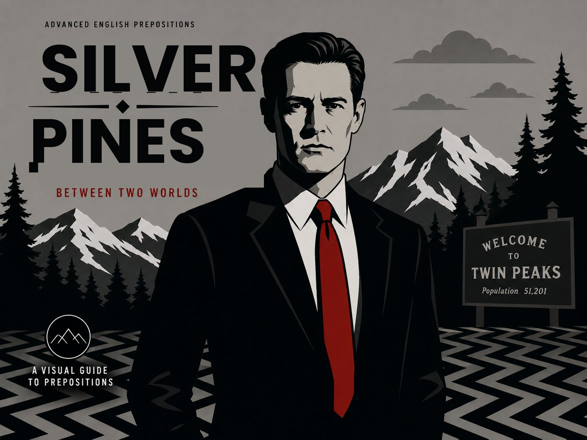

Case File №51,201 — Silver Pines, population unknown.
You are the new deputy assigned to Special Agent Dale Cooper. He talks to his tape recorder, drinks a suspicious amount of coffee, and notices things nobody else does. Help him solve the case — but every clue comes with a language checkpoint. Answer correctly to keep the investigation moving.